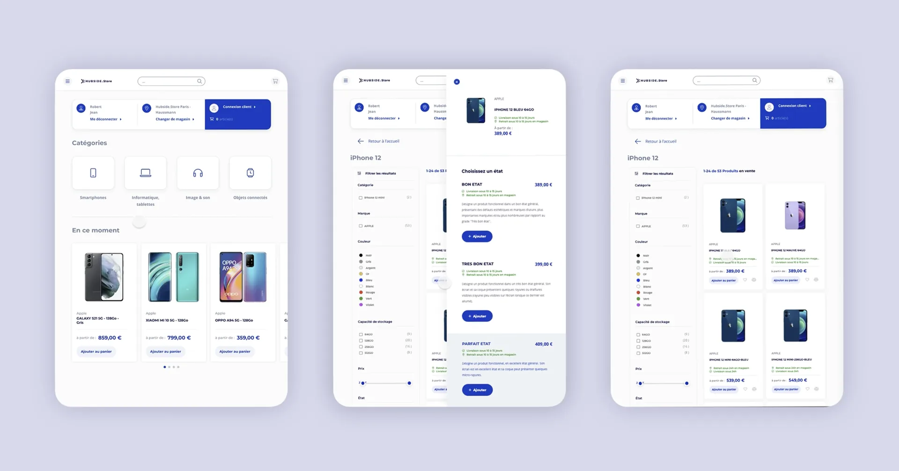
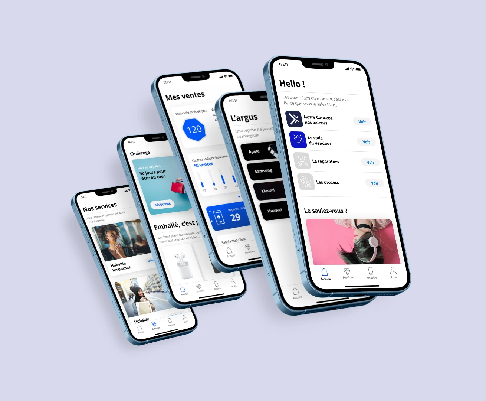
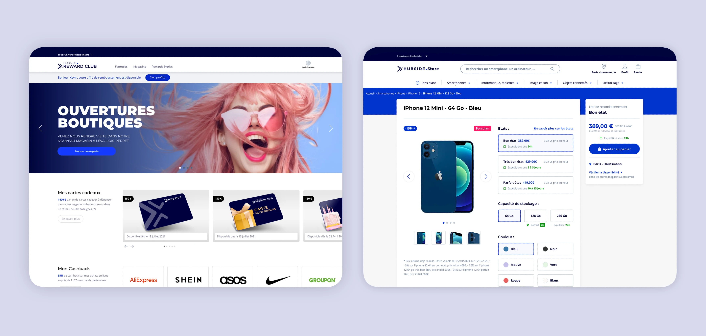

Modernisation de la plateforme e-commerce d'un réseau national de points de vente, avec migration vers Magento et refonte complète de l'expérience utilisateur, dans une stratégie omnicanale valorisant les circuits courts et les logiques de réemploi.
Contexte
Un réseau national de points de vente a engagé la modernisation de sa plateforme e-commerce afin d'accompagner l'évolution de son positionnement stratégique. L'ambition était de proposer une offre élargie de produits multimédia tout en valorisant les circuits courts et les logiques de réemploi.
Ce projet s'inscrivait dans une stratégie omnicanale, impliquant à la fois la refonte complète de l'expérience utilisateur et la modernisation de l'infrastructure technologique de la plateforme.
L'audit de la plateforme existante a révélé plusieurs limitations structurelles impactant à la fois la performance commerciale et l'expérience utilisateur. La migration vers Magento constituait un enjeu majeur : de nouvelles capacités, mais une structuration plus rigoureuse des parcours et des contenus.
Méthodologie
La transformation s'est appuyée sur une approche combinant UX research, service design et structuration produit, afin d'aligner les parcours utilisateurs, les besoins métiers et les contraintes techniques de la plateforme Magento.
Analyse des usages existants et identification des points de friction dans les parcours d'achat.
Menés avec les équipes métiers (vente, marketing, e-commerce) pour formaliser les besoins opérationnels et les interactions boutique / digital.
Modélisation des parcours clés : tunnel d'achat, recherche produit, cross-sell, click & collect, reprise smartphone, suivi de commande.
Conception d'interfaces spécifiques pour équiper les vendeurs en magasin via tablette.
Mise en place d'une roadmap UX/UI continue, alignée avec la roadmap technique de la plateforme.
Alignement des parcours utilisateurs avec les besoins métiers et les contraintes techniques Magento.
Réalisation
Refonte du tunnel d'achat : navigation par catégories, filtres (marque, couleur, capacité), et sélection de l'état de l'appareil (bon état, très bon état, parfait état) avec prix associé.

Refonte du tunnel d'achat : navigation par catégories, filtres (marque, couleur, capacité), et sélection de l'état de l'appareil (bon état, très bon état, parfait état) avec prix associé.

Refonte du tunnel d'achat : navigation par catégories, filtres (marque, couleur, capacité), et sélection de l'état de l'appareil (bon état, très bon état, parfait état) avec prix associé.

Résultats
La refonte de la plateforme et l'optimisation des parcours omnicanaux ont permis d'améliorer significativement les performances du dispositif e-commerce.
Ces résultats traduisent l'impact direct de la refonte des parcours d'achat, de l'optimisation du tunnel de conversion et de l'alignement des outils digitaux avec les usages clients et vendeurs.